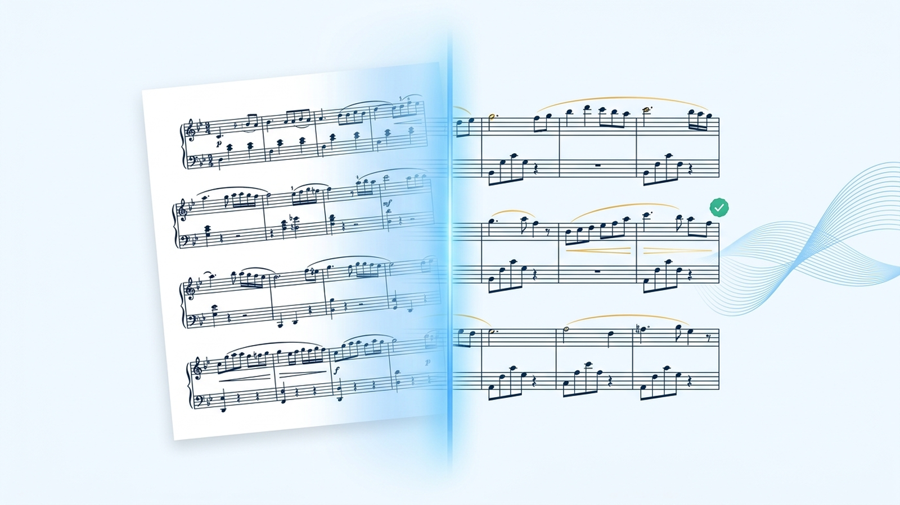
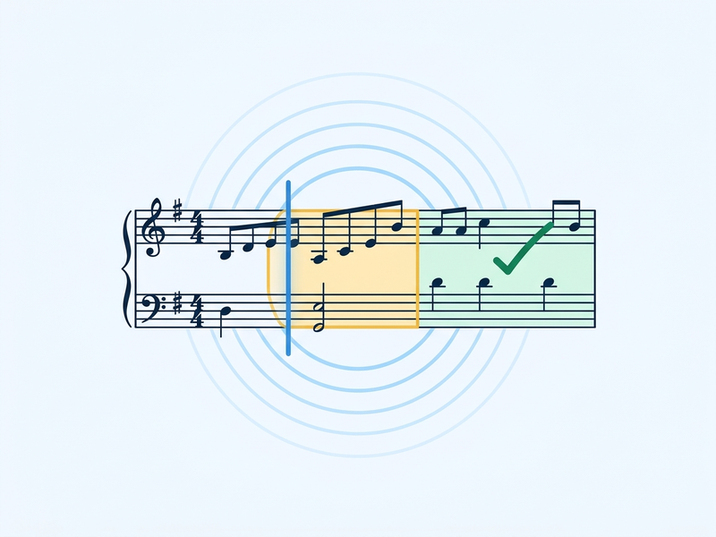
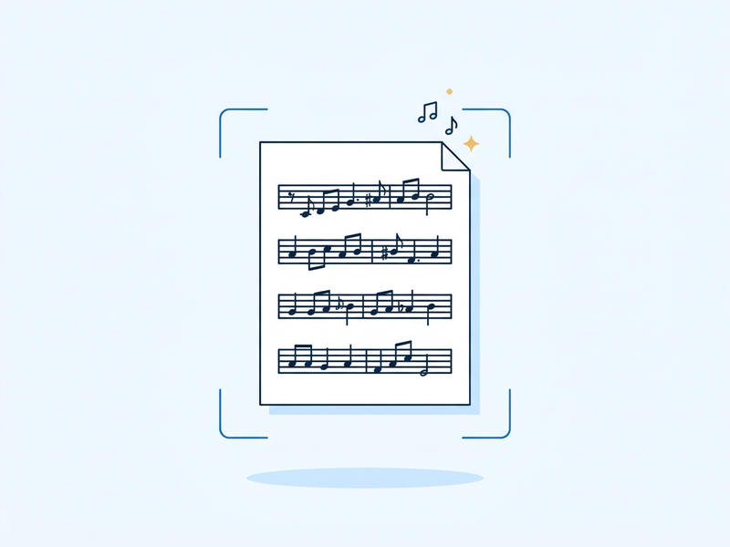

Smart Photo & PDF Capture
Automatic page-edge flattening, uneven shadow correction, and pen-mark stripping turn desk photos and multi-page PDFs into crisp engraving inputs.
Turn printed sheet music and PDFs into clean, editable, playable scores in seconds. MusicScan removes shadows and pencil marks, guides you straight to any uncertain bar, and exports ready-to-engrave MusicXML and MIDI.
Designed for pianists, choral singers, instrumentalists, and arrangers who want reliable scans without fighting a desktop workflow.
Automatic page-edge flattening, uneven shadow correction, and pen-mark stripping turn desk photos and multi-page PDFs into crisp engraving inputs.
Don't proofread every measure by hand. MusicScan highlights only uncertain bars alongside the original photo crop, with one-tap row rescanning.
Tap notes and rests to edit pitches, durations, accidentals, chords, ties, key signatures, and time signatures—all with rhythmic sanity checks.
Write fingerings, bowings, breath marks, and rehearsal notes directly over your engraved score with native, pressure-responsive ink.
Listen with realistic sampled piano, choir, strings, and woodwinds. Slow down passages, loop tricky measures, mute parts, and practice with a metronome.
Export structurally valid MusicXML and standard MIDI straight to MuseScore, Dorico, Sibelius, Finale, Logic Pro, or your favorite score reader.

Even sideways camera shots, page curl, and pencil annotations are normalized into upright, playable notation.

Compare the cleaned original photo strip right next to your digital bars and audition changes with a single tap.

Hold your iPhone or iPad over any printed score—even with shadows, curled edges, or rehearsal markings—or import multi-page PDF sheets.
Inspect only the bars flagged for review right beneath the original photo strip. Accept a second reading, rescan a row, or nudge a note with one tap.
Loop difficult passages at half tempo with sampled instruments, jot fingerings with Apple Pencil, and share clean MusicXML or MIDI anywhere.
Every new user gets a complete first page scan with zero feature locks. Upgrade in the iOS app via Apple In-App Purchase for full multi-page scores and up to 30 pages every month.
Experience the complete MusicScan workflow on your own sheet music first.
Save 48% over monthly billing. Ideal for regular practice, lessons, and ensemble prep.
All MusicScan Pro features with month-to-month flexibility for recital or audition season.
MusicScan Pro subscriptions are purchased inside the MusicScan iPhone & iPad app through the Apple App Store. Your first full scanned page is free—no trial signup required. When you upgrade to Pro, payment is charged to your Apple Account at confirmation of purchase. Subscriptions automatically renew unless canceled at least 24 hours before the end of the current period, and can be managed or canceled anytime in your Apple Account Settings. See our Privacy Policy and Apple's Standard Terms of Use (EULA).